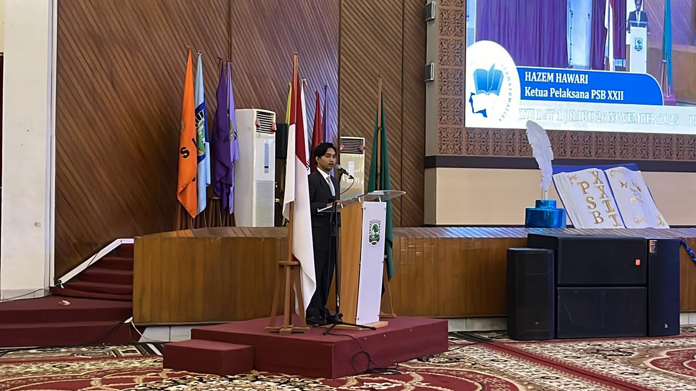
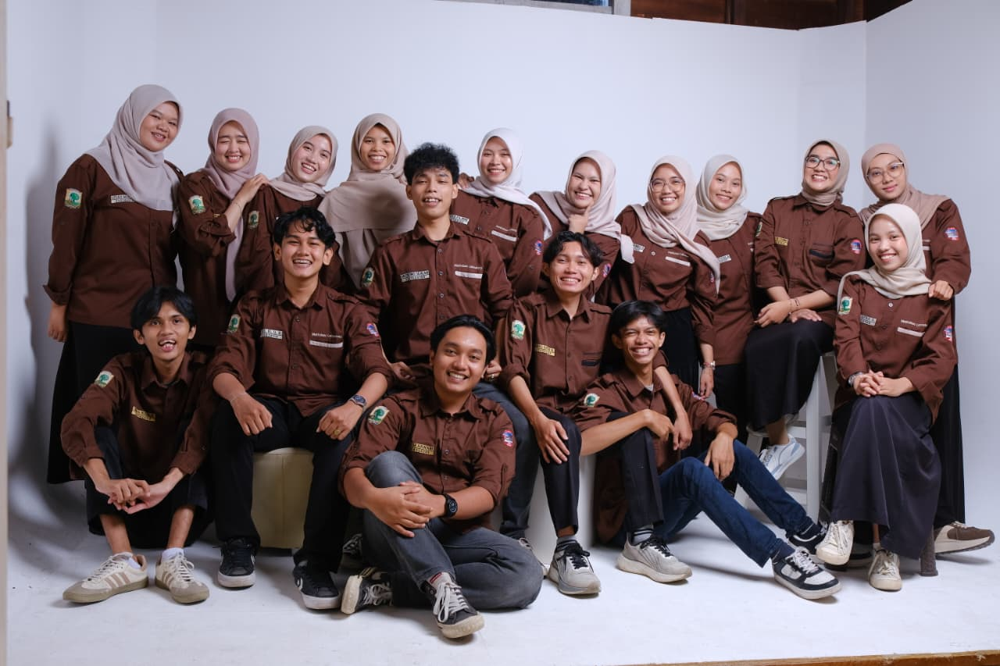
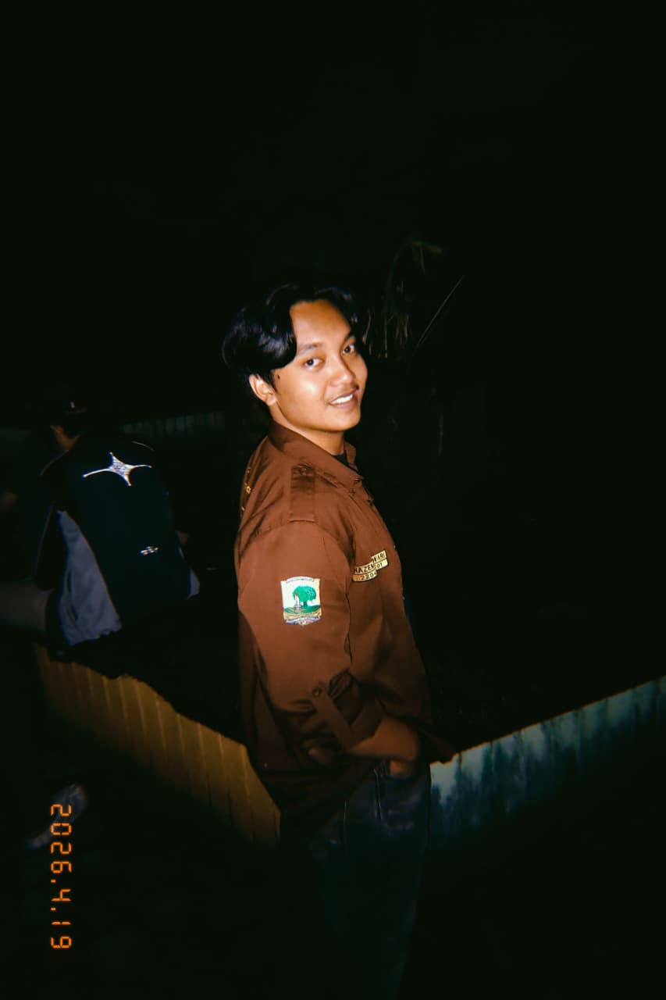
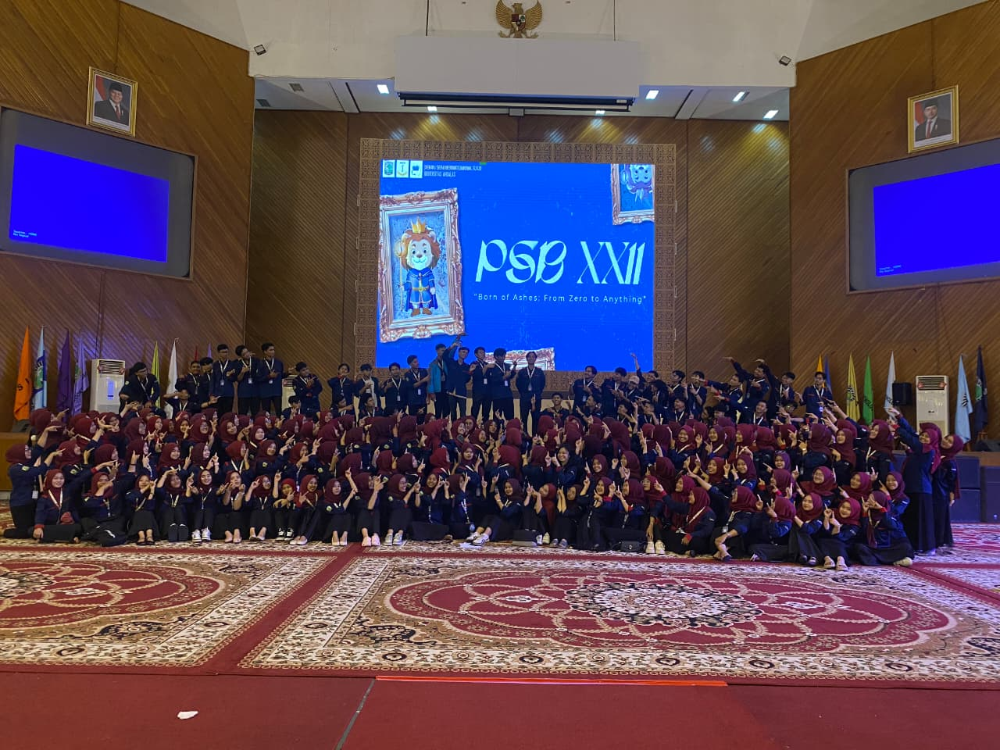
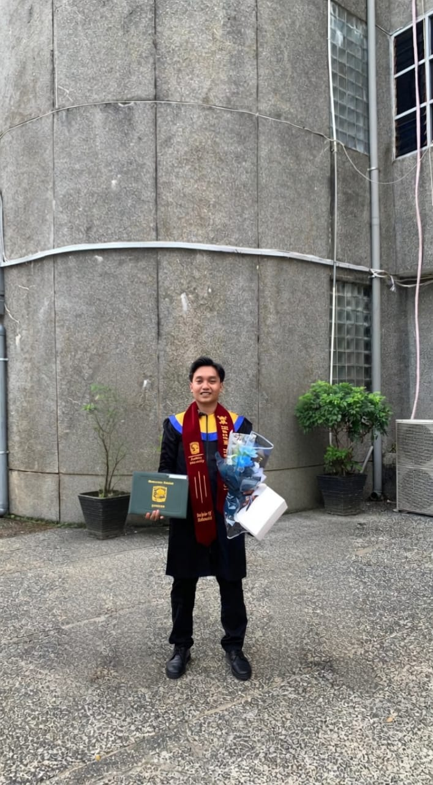

Saya Hazem Hawari, lulusan Matematika dari Universitas Andalas, fokus pada data dan teknologi. Setiap angka punya arah, tugas saya menemukannya.

Lulusan Matematika dari Universitas Andalas (GPA 3.48/4.00) dengan fokus riset pada analisis geometri diferensial dan pemodelan matematis. Selama masa studi, dipercaya sebagai Kepala Divisi Upgrading & Rekrutmen sekaligus Asisten Praktikum Laboratorium Matematika dan Sains Data, membimbing 40–60 mahasiswa per semester pada Metode Numerik, Algoritma dan Pemrograman, serta Persamaan Diferensial, sambil mengembangkan modul pembelajaran berbasis Python. Juga berperan sebagai Asisten Dosen untuk Statistika Matematika dan Pemrograman Linear. Terampil dalam MATLAB, Python, SQL, dan Power BI/Tableau untuk analisis data.
Pengalaman memimpin 250+ panitia pada Pekan Seni Bermatematika XXII memperkuat kapasitas kepemimpinan dan manajemen stakeholder dalam skala nasional.



Lulusan Sarjana Matematika dan Sains Data dari Universitas Andalas (IPK 3.48/4.00) dengan spesialisasi Analisis dan Geometri. Dasar analitis yang kuat telah diterapkan dalam pemodelan matematika, analisis data finansial, dan riset optimasi, termasuk penyusunan indeks saham, pemodelan kinematika menggunakan geometri diferensial, serta optimasi rute maritim dengan algoritma genetika. Dilengkapi pengalaman kepemimpinan melalui keterlibatan aktif di organisasi akademik dan kemahasiswaan.
Pelatihan dasar analisis data dengan pendekatan hands-on dan learn-by-doing, mencakup pengolahan dan interpretasi data.
Kursus daring yang membahas dasar-dasar analisis data untuk mendukung pengambilan keputusan berbasis data.
Saya selalu terbuka untuk mendiskusikan peluang kerja, kolaborasi proyek data, atau sekadar berbincang seputar data dan matematika.
